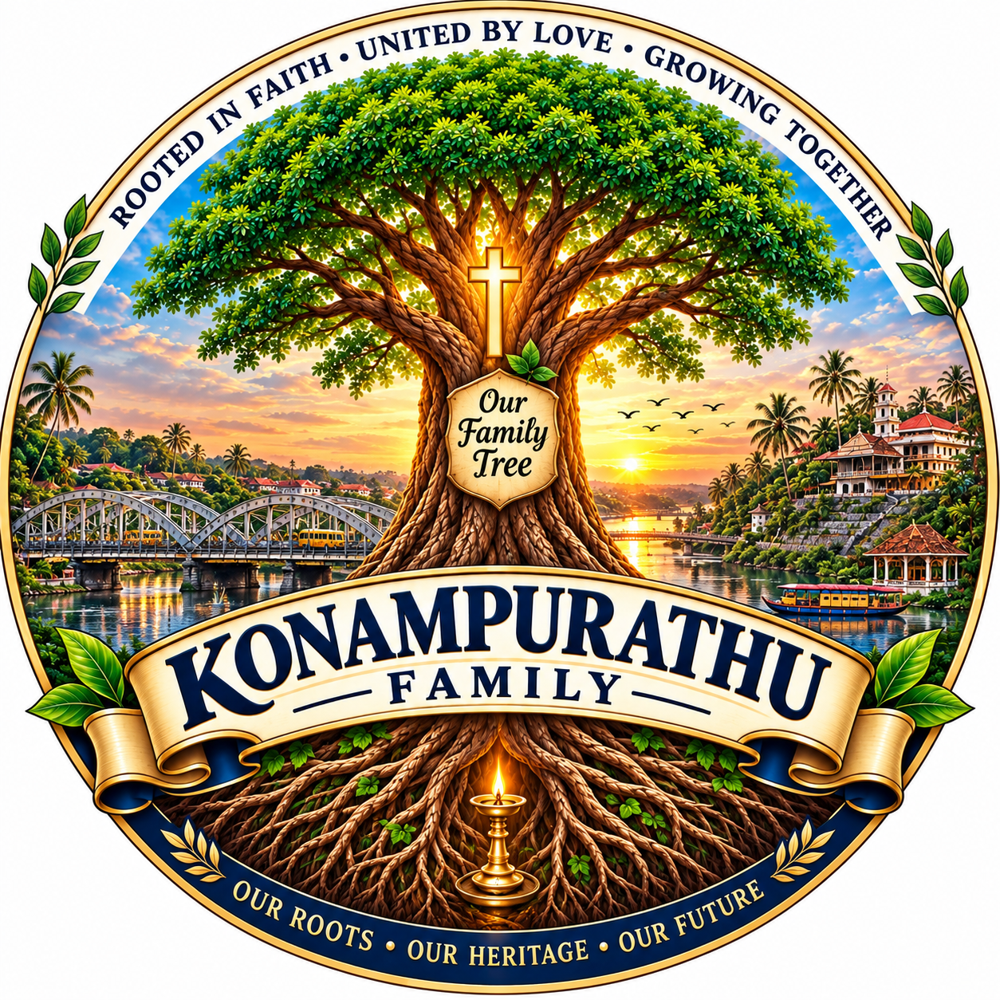

കോനാംപുറത്ത് കുടുംബം
Konampurathu Family Tree — Genealogy Document
A bilingual genealogical record · മലയാളം (English)
September 2026
മൂലകുടുംബം : മൈലക്കുളം (കക്കാട്) (Ancestral Family : Mylakkulam (Kakkadu))
മാത്യു മൈലക്കുളം (Mathew Mylakkulam) — തൊഴിൽ : കൃഷി, വൈദ്യം (Occupation : Agriculture, Medicine.)
ഭാര്യ : ഏലിയാമ്മ, കക്കാട്, കൂടുതൽ വിവരം ലഭ്യമല്ല (Wife : Eliyamma, kakkad, No further details)
മക്കൾ (Children) : 1. ചാക്കോ കോനാംപുറത്ത്, പിറവം (Chacko, Konampurathu, Piravom) 2. പേര് അറിയില്ല, തണങ്ങാട്ട് (Name Unknown, Thanangattu, Mulanturuthi) 3. മങ്ക, മണപ്പുറം കുടുംബം, മണകുന്നം (Manka, Manappuram Family, Manakunnam) 4. തൊമ്മൻ, കിഴക്കേക്കര, കുന്നപ്പിള്ളി, പെരുവ (Kizhakekkara, Kunnappilly, Peruva) 5. പത്രോസ് (Pathrose)
ശാഖ 1 (Branch 1) — ചാക്കോ, കോനാംപുറത്ത് കുടുംബം, പിറവം (Chacko, Konampurathu Family, Piravom)
ചാക്കോ (Chacko) (Late)
തൊഴിൽ : കൃഷി, വൈദ്യം. (Occupation : Agriculture, Medicine)
ഭാര്യ : മറിയം കുരുവിള, പൂവത്തുങ്കൽ കുടുംബാംഗം, നാമക്കുഴി. (Wife : Mariyam Kuruvila,Poovathungal family, Namakkuzhi.)
മക്കൾ (Children) : 1. തൊമ്മൻ ചാക്കോ, കോനാംപുറത്ത് (Thommen Chacko, Konampurathu ) 2. കുരുവിള ചാക്കോ, കോനാംപുറത്ത് (Kuruvila Chacko, Konampurathu)
ഉപശാഖ 1.1 (Sub-branch 1.1) — തൊമ്മൻ ചാക്കോ കോനാംപുറത്ത് ശാഖ (Thommen Chacko Konampurathu Line)
തൊമ്മൻ ചാക്കോ (Thommen Chacko) (Late)
തൊഴിൽ : മലഞ്ചരക്ക് വ്യാപാരം. (Occupation : Business).
ഭാര്യ : അന്നമ്മ, വെള്ളുക്കാട്ടിൽ കുടുംബാംഗം, പിറവം. (Wife : Annamma, Vellukkatil, Piravom).(Late)
മക്കൾ (Children) : 1. മറിയകുട്ടി തേക്കനാട്ട് (Mariyakutty Thekkanattu) 2. അന്നക്കുട്ടി മണപ്പാട്ട് (Annakutty Manappattu), 3. ചാക്കോ (കുഞ്ഞപ്പൻ) കോനാംപുറത്ത് (Chacko (Kunajppan), Konampurathu), 4.തോമസ് (കുഞ്ഞൂഞ്ഞ്) കോനാംപുറത്ത് (Thomas (Kunjuju) Konampurathu), 5.ഏലിയാമ്മ കല്ലിടുക്കിൽ പുത്തൻപുര (Eliyamma Kallidukkil Puthenpura), 6. സൈമൺ (കുഞ്ഞ്) കോനാംപുറത്ത് (Simon (Kunju) Konampurathu), 7. കുര്യാക്കോസ് (ജോയി) കോനാംപുറത്ത് (Kuriakose (Joy) Konampurathu), 8. ശുശാമ്മ മേപ്പാടത്ത് (Susamma Meppadathu), 9. വർഗീസ് (കുഞ്ഞ് വർക്കി) കോനാംപുറത്ത് (Varghese (Kunju Varkey) Konampurathu).
ഉപശാഖ 1.1.1 (Sub-branch 1.1.1) — മറിയകുട്ടി തേക്കനാട്ട് ശാഖ (Mariyakutty Thekkanattu Line)
മറിയകുട്ടി (Mariyakutty) (Late)
തൊഴിൽ : കൃഷി. (Occupation : Agriculture )
ഭർത്താവ് : എബ്രഹാം, തേക്കനാട്ട് കുടുംബാംഗം, പെരുവ. (കർണാടക). (Husband : Abraham, Thekkanattu, Peruva. (Karnataka)).(Late)
മക്കൾ (Children) : 1. പൗലോസ് തേക്കനാട്ട് (Paulose Thekkanattu) 2. തങ്കമ്മ ഓക്കമറ്റം (Thankamma Okamattom), 3. അമ്മണി കുന്നത്ത് (Ammani Kunnathu), 4.തോമസ് (മാമച്ചൻ) തേക്കനാട്ട് (Thomas (Mamachen) Thekkanattu), 5.മേരി മേപ്പുറത്ത് (Mary Meppurathu), 6. സാജു തേക്കനാട്ട് (Saju Thekkanattu).
പൗലോസ് (Paulose) (Late)
തൊഴിൽ : കൃഷി. (Occupation : Agriculture)
ഭാര്യ : ചിന്നമ്മ, കാരമല കുടുംബം, ശീരാടി,(കർണാടക). (Wife : Chinnamma, Karamala Family, Shirady (Karnataka))
മക്കൾ (Children) : 1. ജോയി (Joy) 2. ലെനിൻ (Lenin).
ജോയി (Joy)
തൊഴിൽ : കൃഷി. (Occupation : Agriculture)
ഭാര്യ : വത്സ ജോയി, കുറുപ്പംപടി. (Wife : Valsa Joy Kuruppam padi (Kerala))
മക്കൾ (Children) : 1. ജിസ്വാ ജോയി (Jiswa Joy) 2. വിസിജ ജോയി (Visija Joy).
ജിസ്വാ ജോയി (Jiswa Joy)
തൊഴിൽ : വസ്ത്രവ്യാപാരം (Occupation : Business)
ഭർത്താവ് : ബേസിൽ പി. ജോയി, നെല്ലിമറ്റം, തൊഴിൽ : വെബ് ഡിസൈനർ, ദുബായ്. (Husband : Basil P Joy, Nellimattom, Occupation : Web Designer, Dubai)
മക്കൾ (Children) : 1. റേവൻ സെറാ ബേസിൽ (Revan Sera Basil) 2. ബെല്ല എസ്ലി ബേസിൽ (Bella Esli Basil).
റേവൻ സെറാ ബേസിൽ (Revan Sera Basil)
വിദ്യാർത്ഥി (Student)
ബെല്ല എസ്ലി ബേസിൽ (Bella Esli Basil)
വിസിജ ജോയി (Visija Joy)
തൊഴിൽ : HR - ദുബായ് (Occupation : HR Dubai)
ലെനിൻ (Lenin) (Late)
തൊഴിൽ : മുൻ സൈനികൻ (Occupation : Retd Govt Servant)
ഭാര്യ : ജിനി ലെനിൻ, അടപ്പാട്ട് ഹൗസ്, എൻ.ആർ. പുര, തൊഴിൽ : ഓഡിറ്റർ - IOC ഫ്യൂവൽ സ്റ്റേഷൻ. (Wife : Jini Lenin, Adappatu House, N R Pura, Occupation : Auditor - IOC Fuel Station)
മക്കൾ (Children) : 1. ശ്രദ്ധ (Shrudha) 2. ശ്രാവിൻ ലെനിൻ (Sravin Lenin).
ശ്രദ്ധ (Shrudha)
തൊഴിൽ : അധ്യാപിക (Occupation : Teacher)
ഭർത്താവ് : ശ്രേയസ് ഷാജി, കാനഡ (Husband : Shreyas Shaji, Canada)
ശ്രാവിൻ ലെനിൻ (Sravin Lenin)
വിദ്യാർത്ഥി (Student)
തങ്കമ്മ (Thankamma) (Late)
തൊഴിൽ : കൃഷി. (Occupation : Agriculture)
ഭർത്താവ് : മാത്യു, ഓക്കമറ്റം കുടുംബം, ശീരാടി,(കർണാടക) (Husband : Mathew (Late), Okkamattom Family, Shiradi (Karnataka))
മക്കൾ (Children) : 1. സാം മാത്യു (Sam Mathew) 2. ഷിബു മാത്യു (Shibu Mathew) 3. സുനി മാത്യു (Suni Mathew).
സാം മാത്യു (Sam Mathew)
തൊഴിൽ : എഞ്ചിനീയർ, ഒമാൻ (Occupation : Engineer, Oman)
ഭാര്യ : ആശ സാം, പെരുവ. (Wife : Asha Sam, Peruva)
മക്കൾ (Children) : 1. മിന്നു സാം (Minnu Sam) 2. മന്യ സാം (Manya Sam).
മിന്നു സാം (Minnu Sam)
തൊഴിൽ : Pharm. D, കാനഡ (Occupation : Pharm D., Canada)
ഭർത്താവ് : സച്ചിൻ, കാനഡ. (Husband : Sachin, Canada)
മന്യ സാം (Manya Sam)
തൊഴിൽ : Bangalore (Occupation : Bangalore)
ഷിബു മാത്യു (Shibu Mathew) (Late)
തൊഴിൽ : എഞ്ചിനീയർ (Occupation : Engineer)
ഭാര്യ : മഞ്ജു ഷിബു, മുളന്തുരുത്തി. (Wife : Manju Shibu, Mulathuruthy)
മക്കൾ (Children) : 1. മിൽന ഷിബു (Milna Shibu)
മിൽന ഷിബു (Milna Shibu)
വിദ്യാർത്ഥിനി, ഓസ്ട്രേലിയ (Student, Australia)
സുനി മാത്യു (Suni Mathew)
തൊഴിൽ : കൃഷി (Occupation : Agriculture)
ഭർത്താവ് : തങ്കച്ചൻ, തൃശൂർ. തൊഴിൽ : കൃഷി / ബിസിനസ്. (Husband : Thankachan (Late), Thrissur, Occupation : Agriculture / Business)
മക്കൾ (Children) : 1. നിമിത തങ്കച്ചൻ (Nimitha Thankachan) 2. നിഖിത തങ്കച്ചൻ (Nikitha Thankachan) 3. നിമിഷ തങ്കച്ചൻ (Nimisha Thankachan).
നിമിത തങ്കച്ചൻ (Nimitha Thankachan)
തൊഴിൽ : ലാബ് ടെക്നീഷ്യൻ (Occupation : Lab Technician)
നിഖിത തങ്കച്ചൻ (Nikitha Thankachan)
തൊഴിൽ : MSW (Occupation : MSW)
നിമിഷ തങ്കച്ചൻ (Nimisha Thankachan)
തൊഴിൽ : നേഴ്സിംഗ് വിദ്യാർത്ഥിനി, ജർമ്മനി (Occupation : Nursing Student, Germany)
അമ്മണി (Ammini)
തൊഴിൽ : കൃഷി. (Occupation : Agriculture)
ഭർത്താവ് : അബ്രഹാം,കുന്നത്ത് കുടുംബം (Husband : Abraham (Late), Kunnathu Family)
മക്കൾ (Children) : 1. രാജേഷ് കെ. എ (Rajesh K. A) 2. അശോക് കെ. എ (Ashok K. A) 3. പ്രകാശ് കെ. എ (Prakash K. A)
രാജേഷ് കെ. എ (Rajesh K. A)
തൊഴിൽ : കൃഷി (Occupation : Agriculture)
ഭാര്യ : അനു രാജേഷ്, കോഴിച്ചാൽ (Wife : Anu Rajesh, Kozhichal)
മക്കൾ (Children) : 1. പ്രജ്വൽ രാജേഷ് (Prijual Rajesh) 2.പ്രതീക്ഷ രാജേഷ് (Pratheeksha Rajesh)
പ്രജ്വൽ രാജേഷ് (Prijual Rajesh)
തൊഴിൽ : എഞ്ചിനീയർ, ബാംഗ്ലൂർ (Occupation : Engineer Bangalore)
പ്രതീക്ഷ രാജേഷ് (Pratheeksha Rajesh)
തൊഴിൽ : വിദ്യാർത്ഥിനി (Occupation : Student)
അശോക് കെ. എ (Ashok K. A)
തൊഴിൽ : എഞ്ചിനീയർ, ഒമാൻ (Occupation : Engineer, Oman)
ഭാര്യ : ഷൈലറ്റ് അശോക്, മംഗലാപുരം, തൊഴിൽ : ലക്ചറർ (Wife : Shilet Ashok,Mangalore. Occcupation : Lecturer)
മക്കൾ (Children) : 1. ആരൂൺ അശോക് (Arun Ashok) 2.ആറിക് അശോക് (Arik Ashok)
ആരൂൺ അശോക് (Arun Ashok)
വിദ്യാർത്ഥി (Student)
ആറിക് അശോക് (Arik Ashok)
വിദ്യാർത്ഥി (Student)
പ്രകാശ് കെ. എ (Prakash K. A)
തൊഴിൽ : കൃഷി (Occupation : Agriculture)
ഭാര്യ : സൗമ്യാ, ബൈന്ദൂർ (Wife : Saumya Bindoor)
മക്കൾ (Children) : 1. അനന്യ പ്രകാശ് (Ananya Prakash) 2. ബേസിൽ പ്രകാശ് (Basil Prakash)
അനന്യ പ്രകാശ് (Ananya Prakash)
വിദ്യാർത്ഥിനി (Student)
ബേസിൽ പ്രകാശ് (Basil Prakash)
വിദ്യാർത്ഥി (Student)
തോമസ് (മാമച്ചൻ) (Thomas (Mamachen))
തൊഴിൽ : കൃഷി (Occupation : Agriculture)
ഭാര്യ : ഏലിയാമ്മ, ചേന്നംമ്പിള്ളിൽ കുടുംബം, കർണാടക (Wife : Eliyamma, Chennampillil Family, Karnataka)
മക്കൾ (Children) : 1. മനോജ് തോമസ് (Manoj Thomas) 2. വിനോദ് തോമസ് (Vinod Thomas) 3. പ്രമോദ് തോമസ് (Pramod Thomas)
മനോജ് തോമസ് (Manoj Thomas)
ഭാര്യ : ടീന, വയനാട് (Wife : Tina, Wayanad)
മക്കൾ (Children) : 1. മെൽവിൻ മനോജ് (Melvin Manoj) 2. മിലൻ മനോജ് (Milan Manoj)
മെൽവിൻ മനോജ് (Melvin Manoj)
വിദ്യാർത്ഥി (Student)
മിലൻ മനോജ് (Milan Manoj)
വിദ്യാർത്ഥി (Student)
വിനോദ് തോമസ് (Vinod Thomas)
തൊഴിൽ : എഞ്ചിനീയർ, കാനഡ, (Occupation : Engineer, Canada)
ഭാര്യ : ആൻ മേരി വിനോദ്, പാമ്പാക്കുട, തൊഴിൽ : എഞ്ചിനീയർ, കാനഡ. (Wife : Ann Mary Vinod. Occcupation : Engineer, Canada)
മക്കൾ (Children) : 1. ഈഡൻ വിനോദ് (Eden Vinod) 2. അരുവാൻ വിനോദ് (Aruvan Vinod) 3. ഇവ വിനോദ് (Eva Vinod)
ഈഡൻ വിനോദ് (Eden Vinod)
വിദ്യാർത്ഥി (Student)
അരുവാൻ വിനോദ് (Aruvan Vinod)
വിദ്യാർത്ഥി (Student)
ഇവ വിനോദ് (Eva Vinod)
വിദ്യാർത്ഥിനി (Student)
പ്രമോദ് തോമസ് (Pramod Thomas)
തൊഴിൽ : നേഴ്സ്, ഓസ്ട്രേലിയ (Occupation : Nurse, Australia)
ഭാര്യ : രമ്യ പ്രമോദ്, അടിമാലി, തൊഴിൽ : നേഴ്സ്, ഓസ്ട്രേലിയ (Wife : Remya Pramod, Adimali, Occupation : Nurse, Australia)
മക്കൾ (Children) : 1. ആഞ്ചലീന പ്രമോദ് (Anjalina Pramod) 2. ഇവാൻ പ്രമോദ് (Evan Pramod)
ആഞ്ചലീന പ്രമോദ് (Anjalina Pramod)
വിദ്യാർത്ഥിനി (Student)
ഇവാൻ പ്രമോദ് (Evan Pramod)
വിദ്യാർത്ഥി (Student)
മേരി (Mary)
തൊഴിൽ : കൃഷി (occupation : Agriculture)
ഭർത്താവ് : ഈപ്പൻ, (തമ്പി), മേപ്പുറത്ത് കുടുംബം, ഇച്ചിലംപാടി (Husband : Eapen (Thamby), Meppurathu Family, Ichilampadi Karnataka)
മക്കൾ (Children) : 1. മിനി ഈപ്പൻ (Mini Eapen) 2. റേനി ഈപ്പൻ (Reni Eapen) 3. ചാൾസ് ഈപ്പൻ (Charles Eapen)
മിനി ഈപ്പൻ (Mini Eapen)
വീട്ടമ്മ– ബാംഗ്ലൂർ (House Wife, Bangalore)
ഭർത്താവ് : ജിജി മണി, അടപ്പാട്ട്, എൻ.ആർ. പുര, തൊഴിൽ : അക്കൗണ്ടന്റ്, ബാംഗ്ലൂർ. (Husband : Jiji Mani, Adappattu, N R Pura Occupation : Accountant, Bangalore)
മക്കൾ (Children) : 1. മിൻജു ജിജി (Minju Jiji) 2. ആയുഷ് ജിജി (Ayush Jiji)
മിൻജു ജിജി (Minju Jiji)
തൊഴിൽ : എഞ്ചിനീയർ, ഓസ്ട്രേലിയ. (Occupation : Engineer, Australia)
ആയുഷ് ജിജി (Ayush Jiji)
വിദ്യാർത്ഥി (Student)
റേനി ഈപ്പൻ (Reni Eapen)
തൊഴിൽ : ഇലക്ട്രിക്കൽ സൂപ്പർവൈസർ, ദുബായ്. (Occupation : Electrical Supervisor, Dubai).
ഭാര്യ : സ്മിത റേനി എൻ.ആർ. പുര, തൊഴിൽ : നേഴ്സ്,. (Wife : Smitha Reni, NR Pura Occcupation : Nurse)
മക്കൾ (Children) : 1. അലൈന (Alaina) 2. അൽവിന (Alvina)
അലൈന (Alaina)
വിദ്യാർത്ഥിനി (Student)
അൽവിന (Alvina)
വിദ്യാർത്ഥിനി (Student)
ചാൾസ് ഈപ്പൻ (Charles Eapen)
തൊഴിൽ : HSE ഓഫീസർ, റെയിൽവേ,UK (Occupation : HSE Officer, Railway, UK)
ഭാര്യ : ഡൈന ചാൾസ്, നെല്ലിയാടി. UK (Wife : Daina charles, Nellyadi, UK)
മക്കൾ (Children) : 1. അഡ്വിൻ (Adwin) 2. അഡ്ലിൻ (Adlin)
അഡ്വിൻ (Adwin)
വിദ്യാർത്ഥി (Student)
അഡ്ലിൻ (Adlin)
വിദ്യാർത്ഥി (Student)
സാജു (Saju)
തൊഴിൽ : ടെക്നിക്കൽ മാനേജർ, ബഹ്റൈൻ (Occupation : Technical Manager, Bahrin)
ഭാര്യ : മിനി സാജു, അടപ്പാട്ട്, N R പുര തൊഴിൽ : വീട്ടമ്മ, N R പുര. (Wife : Mini Saju, Adappathu, N RN Pura, Occupation : House Wife)
മക്കൾ (Children) : 1. മെറിൻ സാജു (Merin Saju) 2. ജെറിൻ സാജു (Jerin Saju)
മെറിൻ സാജു (Merin Saju)
തൊഴിൽ : ഹെൽത്ത് ഇൻഫോർമാറ്റിക്, UK (Occupation : Health informatic, UK)
ഭർത്താവ് : നിതിൻ ജിമ്മി, കാഞ്ഞക്കാട്. തൊഴിൽ : മെഷിനിസ്റ്റ്,UK. (Husband : Nithin Jimmy, Kanhjangadu, Occupation : Machinist, UK)
മക്കൾ (Children) : 1. ജൊനാഥൻ ജിമ്മി (Johnathan Jimmy) 2. മാർസെല്ല ജിമ്മി (Marcella Jimmy)
ജൊനാഥൻ ജിമ്മി (Johnathan Jimmy)
മാർസെല്ല ജിമ്മി (Marcella Jimmy)
ജെറിൻ സാജു (Jerin Saju)
തൊഴിൽ : എഞ്ചിനീയർ, കാനഡ (Occupation : Engineer, Canada).
ഭാര്യ : ടീന ജെറിൻ, നെല്ലിയാടി തൊഴിൽ : ലോജിസ്റ്റിക് കോർഡിനേറ്റർ, കാനഡ. (Wife : Teena Jerin, Nellyadi Occcupation : Logistic Cordinator)
ഉപശാഖ 1.1.2 (Sub-branch 1.1.2) — അന്നക്കുട്ടി മണപ്പാട്ട് ശാഖ (Annakutty Manappattu Line)
അന്നക്കുട്ടി (Annakutty)(Late)
തൊഴിൽ : കൃഷി. (Occupation : Agriculture)
ഭർത്താവ് : ഉലഹന്നാൻ എം. യു (കുഞ്ഞപ്പൻ),മണപ്പാട്ട് കുടുംബാംഗം, കക്കാട്. (Husband : Ulahannan M U (Kunjappan)(Late), Manappattu, Kakkad),തൊഴിൽ : കൃഷി. (Occupation : Agriculture)
മക്കൾ (Children) : 1. ജോൺ (John) 2. തോമസ് (Thomas) 3. തങ്ക (Thanka) / ഏലിയാമ്മ (Eliyamma) 4. ചിന്നമ്മ (Chinnamma)
ജോൺ (John)
തൊഴിൽ : മുൻ സൈനികൻ (Occupation : Retd. Govt Servant)
ഭാര്യ : കുഞ്ഞന്നാമ്മ, തോട്ടുപുറത്ത് കുടുംബാംഗം.മുളക്കുളം. (Wife : Kujannamma, Thottupurathu Family, Mulakkulam)
മക്കൾ (Children) : 1. ജോമോൾ (Jomol) 2. ജിജോമോൾ (Jijomol)
ജോമോൾ (Jomol)
തൊഴിൽ : നേഴ്സ്,, UK (Occupation : Nurse, UK)
ഭർത്താവ് : മധു മാമൻ, UK, ചേലായ്ക്കാമറ്റം കുടുംബാംഗം, മാറാടി (Husband : Madhu Mammen, Chelakkamattam Family, Marady)
മക്കൾ (Children) : 1. ജെഫ്രി (Jeffry) 2. എഫ്രയിം (Ephraim)
ജെഫ്രി (Jeffry)
വിദ്യാർത്ഥി (Student)
എഫ്രയിം (Ephraim)
വിദ്യാർത്ഥി (Student)
ജിജോമോൾ (Jijomol)
തൊഴിൽ : നേഴ്സ്,, ഓസ്ട്രേലിയ (Occupation : Nurse, Australia)
ഭർത്താവ് : ഷെറിൽ സ്കറിയ, ഓസ്ട്രേലിയ, പട്ടരുമഠം കുടുംബാംഗം, പാലക്കുഴ. (Husband : Sheril Skaria, Australia, Pattarumadam family, Palakkuzha)
മക്കൾ (Children) : 1. ഏഞ്ചല (Angela) 2. ആൻലിയ (Anlia)
ഏഞ്ചല (Angela)
വിദ്യാർത്ഥിനി (Student)
ആൻലിയ (Anlia)
വിദ്യാർത്ഥിനി (Student)
തോമസ് (Thomas)
തൊഴിൽ : മുൻ സൈനികൻ (Occupation : Retd. Govt Servant)
ഭാര്യ : സൂസി, വെളിയിൽ കുടുംബാംഗം, ഉദയനാപുരം, വൈക്കം. (Wife : Susy, Veliyil Family, Udayanapuram, Vaikom)
മക്കൾ (Children) : 1. റ്റിസി (Tissy) 2. റ്റിനി (Tinny) 3.ഫാ. എൽദോ മണപ്പാട്ട് (Rev. Fr. Eldho Manappattu)
റ്റിസി (Tissy)
തൊഴിൽ : ടീച്ചർ, (Occupation : Teacher)
ഭർത്താവ് : അനിൽ സക്കറിയ, കോളങ്ങാത്ത് കുടുംബാംഗം, പുളിക്കമാലി.തൊഴിൽ : ടീച്ചർ (Husband : Anil Skaria. Kolangathu Family, Pulikkamali, Occupation : Teacher)
മക്കൾ (Children) : 1. ഏഞ്ചലിന (Angelina) 2. ഏഞ്ചലിയ (Angelia)
ഏഞ്ചലിന (Angelina)
വിദ്യാർത്ഥിനി (Student)
ഏഞ്ചലിയ (Angelia)
വിദ്യാർത്ഥിനി (Student)
റ്റിനി (Tinny)
തൊഴിൽ : ഫാർമസിസ്റ്റ്, UK (Occupation : Pharmacist, UK)
ഭർത്താവ് : എൽദോ മാത്യു, കാവലേലിൽ കുടുംബാംഗം, കുരുവിള സിറ്റി, രാജകുമാരി. തൊഴിൽ : ഐ.ടി.പ്രൊഫഷണൽ , UK (Husband : Eldho Mathew, Kavalelil Family, Kuruvila City, Rajakumari.Occupation : IT Professional, UK)
മക്കൾ (Children) : 1. റൂബേൻ (Reuben) 2. നെയ്തൻ (Neythan) 3. ജോസ് (Jose)
റൂബേൻ (Reuben)
വിദ്യാർത്ഥി (Student)
നെയ്തൻ (Neythan)
വിദ്യാർത്ഥി (Student)
ജോസ് (Jose)
വിദ്യാർത്ഥി (Student)
ഫാ. എൽദോ മണപ്പാട്ട് (Rev. Father Eldho Manappattu)
ഭാര്യ : ബെറ്റ്സി, നാൻചിറയിൽ കുടുംബാംഗം, വാളകം.തൊഴിൽ : ടീച്ചർ, (Wife : Betsy, Nanchirayil Family, Valakom. Occupation : Teacher)
മക്കൾ (Children) : 1. യോഹാൻ (Yohan) 2. ഏദൻ (Eden)
യോഹാൻ (Yohan)
വിദ്യാർത്ഥി (Student)
തങ്ക (Thanka) / ഏലിയാമ്മ (Eliyamma)
ഭർത്താവ് : മാർക്കോസ്. റ്റി. എ, താത്തോത്ത് കുടുംബാംഗം, കളമ്പൂർ. (Husband : Markose T. A (Late), Tathoth, Kalamboor)
മക്കൾ (Children) : 1. സ്മിത (Smitha) 2. സുമിത്ത് (Sumith) 3. അനു (Anu)
സ്മിത (Smitha)
തൊഴിൽ : നേഴ്സ്, ഓസ്ട്രേലിയ (Occupation : Nurse, Australia)
ഭർത്താവ് : ജോണി വർഗീസ്, മൈലാടിക്കുന്നേൽ കുടുംബാംഗം, കിഴകൊമ്പ്, തൊഴിൽ : എഞ്ചിനീയർ, ഓസ്ട്രേലിയ (Husband : Johny Varghese, Myladikunnel Family, Kizhakombu, Occupation : Engineer, Australia)
മക്കൾ (Children) : 1. ജോഹൻ (Johan) 2. ഒലിവിയ (Olivia)
ജോഹൻ (Johan)
വിദ്യാർത്ഥി (Student)
ഒലിവിയ (Olivia)
വിദ്യാർത്ഥിനി (Student)
സുമിത്ത് (Sumith)
തൊഴിൽ : എഞ്ചിനീയർ,ഖത്തർ (Occupation : Engineer, Qatar)
ഭാര്യ : ലിയോണ, മൂത്താനിച്ചിറയിൽ കുടുംബാംഗം, പിറവം.തൊഴിൽ : നേഴ്സ്, ഖത്തർ, (Wife : Leona, Muthanichirayil Family, Piravom.Occupation : Nurse, Qatar)
മക്കൾ (Children) : 1. ആൽഡ്രിൻ (Aldrin) 2. എയ്റോൺ (Airon)
ആൽഡ്രിൻ (Aldrin)
വിദ്യാർത്ഥി (Student)
എയ്റോൺ (Airon)
വിദ്യാർത്ഥി (Student)
അനു (Anu)
തൊഴിൽ : ഐ.ടി.പ്രൊഫഷണൽ, കാനഡ (Occupation : IT Professional, Canada)
ഭർത്താവ് : ജെസ്സ് പോൾ, കാനഡ, കൊച്ചുപറമ്പിൽ കുടുംബാംഗം, മുളന്തുരുത്തി. (Husband : Jes Paul, Canada, Kochparambil family, Mulathuruthy)
മക്കൾ (Children) : 1. എസക്കിയേൽ (Ezekiel)
എസക്കിയേൽ (Ezekiel)
വിദ്യാർത്ഥി (Student)
ചിന്നമ്മ (Chinnamma)
ഭർത്താവ് : ജേക്കബ്,തുമ്പയിൽ കുടുംബാംഗം, പിറവം. (Husband : Jacob, Thumayil Piravom )
മക്കൾ (Children) : 1. ജാക്സൺ (Jackson) 2. ജോൺസൺ (Johnson)
ജാക്സൺ (Jackson)
ഭാര്യ : അനു,പെരിങ്ങാമല കുടുംബാംഗം, പിറവം. തൊഴിൽ : നേഴ്സ് (Wife : Anu, Peringamalayil Family, Piravom, Occupation : Nurse Australia)
മക്കൾ (Children) : 1. ജുവാൻ (Juvaan) 2. ജാക്ലിൻ (Jacklin) 3. ജെറോൺ (Jeron)
ജുവാൻ (Juvaan)
വിദ്യാർത്ഥി (Student)
ജാക്ലിൻ (Jacklin)
വിദ്യാർത്ഥിനി (Student)
ജെറോൺ (Jeron)
വിദ്യാർത്ഥി (Student)
ജോൺസൺ (Johnson)
തൊഴിൽ : പ്രൈവറ്റ് (Occupation : Private)
ഭാര്യ : മീതു, ചിറയ്ക്കച്ചാലിൽ കുടുംബാംഗം, ആരക്കുന്നം. തൊഴിൽ : ഐ.ടി.പ്രൊഫഷണൽ (Wife : Meethu, Chirakkachalil Family, Arakkunnam, Occupation IT Professional)
മക്കൾ (Children) : 1. ജെന്നിഫർ (Jennifer) 2. ജെയ്ഡൻ (Jayden)
ജെന്നിഫർ (Jennifer)
വിദ്യാർത്ഥിനി (Student)
ജെയ്ഡൻ (Jayden)
വിദ്യാർത്ഥി (Student)
ഉപശാഖ 1.1.3 (Sub-branch 1.1.3) — ചാക്കോ (കുഞ്ഞപ്പൻ) കോനാംപുറത്ത് ശാഖ (Chacko (Kunjappan) Konampurathu Line)
ചാക്കോ (കുഞ്ഞപ്പൻ) (കർണാടക) (Chacko (Kunjappan) (Karnataka)) (Late)
തൊഴിൽ : മലഞ്ചരക്ക് വ്യാപാരം. (Occupation : Business)
ഭാര്യ : പെണ്ണമ്മ, മുത്തുപതിക്കൽ കുടുംബാംഗം, ഇടയാർ. (Wife : Pennamma (Late), Muthupathikkal Family, Edayar)
മക്കൾ (Children) : 1. സാജു (Saju) 2. മോളി (Molly) 3. ഷിബു (Shibu) / കുഞ്ഞുമോൻ (Kunjumon) 4. ജോളി (Jolly) 5. ഏലിയാസ് (Elias)
സാജു (Saju)
തൊഴിൽ : കൃഷി (Occupation : Agriculture)
ഭാര്യ : ലിസ്സി, ചാലുനിലത്തിൽ കുടുംബാംഗം, മണ്ണാർക്കാട്. (Wife : Lissy, Chalunilathil Family, Mannarkadu)
മക്കൾ (Children) : 1. പ്രിയങ്ക (Priyanka) 2.പ്രതീക് (Prathik)
പ്രിയങ്ക (Priyanka)
തൊഴിൽ : നേഴ്സ്, (Occupation : Nurse)
ഭർത്താവ് : ബേസിൽ, അമ്പഴചാലിൽ കുടുംബാംഗം, പുതുപ്പാടി. തൊഴിൽ : എൻജിനിയർ, ന്യൂസിലാൻഡ് (Husband : Basil, Ambazhachalil Family, Puduppady, Occupation : Engineer, New Zealand)
മക്കൾ (Children) : 1. ജേക്ക് (Jake) 2. ജേഡൻ (Jayden)
പ്രതീക് (Prathik)
തൊഴിൽ : എൻജിനിയർ, UAE (Occupation : Engineer, UAE)
ഭാര്യ : മോനിഷ, കല്യാററ് വീട് നെല്യാടി, തൊഴിൽ : ബയോ ടെക്നോളജിസ്റ്റ്, UAE (Wife : Monisha, Kalyattu Family, Nellyadi, Occupation : Bio technologyst)
മക്കൾ (Children) : 1. നൈറ (Naira)
മോളി (Molly)
ഭർത്താവ് : മുരളി, മുൻ കസ്റ്റംസ് ഉദ്യോഗസ്ഥൻ, കഴുന്നാട്ടുപറമ്പിൽ കുടുംബാംഗം, പിറവം (Husband : Murali Retd. Customs Officer, Kazhunattu Parambil, Piravom)
മക്കൾ (Children) : 1. മിഥുൻ (Mithun) 2. മീര (Meera)
മിഥുൻ (Mithun)
തൊഴിൽ : ഐ.ടി.പ്രൊഫഷണൽ, ബാംഗ്ലൂർ. (Occupation : IT Professional, Bangalore)
ഭാര്യ : അമിത, മണപ്പറമ്പിൽ കുടുംബം, പയ്യന്നൂർ. (Wife : Amitha, Manapparambil Family, Payyanoor)
മീര (Meera)
തൊഴിൽ : സൈക്കോളജിസ്റ്റ്, വരാപ്പുഴ (Occupation : Psychologyst, Varappuzha)
ഷിബു (Shibu) / കുഞ്ഞുമോൻ (Kunjumon)
തൊഴിൽ : വിമുക്ത വായുസേനാദ്യോഗസ്ഥൻ. (Occupation : Retd. Staff Airforce)
ഭാര്യ : ശോഭ, ചെമ്പോത്തിനാൽ കുടുംബാംഗം, ശിരാടി, തൊഴിൽ : റിട്ട : നഴ്സിംഗ് സൂപ്രണ്ട്. (Wife: Shobha, Chembothinal Family, Shirady. Occupation : Retd. Nursing Superintend)
മക്കൾ (Children) : 1. നിക്കിൽ (Nikil) 2. നമിത (Namitha)
നിക്കിൽ (Nikil)
തൊഴിൽ : എൻജിനിയർ, ബാംഗ്ലൂർ. (Occupation : Engineer, Bangalore)
ഭാര്യ : അലീന, നെടുംമണ്ണിൽ കുടുംബാംഗം, ബാംഗ്ലൂർ തൊഴിൽ : എൻജിനിയർ, ബാംഗ്ലൂർ (Wife : Aleena, Nedumannil Family, Bangalore. Occupation : Engineer, Bangalore)
നമിത (Namitha)
തൊഴിൽ : BDS UK (Occupation : BDS UK)
ജോളി (Jolly)
തൊഴിൽ : കോളേജ് ലക്ചറർ, (Occupation : College Lecturer)
ഭർത്താവ് : ജോർജ്, മുൻ സൈനികൻ, വാതക്കാട്ടേൽ കുടുംബാംഗം, നെല്ലിയാടി. (Husband : George, Retd. Govt Servant, Vathakkattel family, Nellaydy)
മക്കൾ (Children) : 1. അഖിൽ (Akhil) 2. നാൻസി (Nancy)
അഖിൽ (Akhil)
തൊഴിൽ : HR മാനേജർ, (Byadgi). (Occupation : HR Manager, (Byadgi)).
ഭാര്യ : നവ്യ. പീഴത്തിങ്ങൽ കുടുംബാംഗം (കഡബ), തൊഴിൽ : HR മാനേജർ, St : Johns ഹോസ്പിറ്റൽ, ബാംഗ്ലൂർ. (Wife : Navya, Pizhatthingal family,Kadaba, Occupation : HR manager, St Johns Hopital, Bangalore)
നാൻസി (Nancy)
തൊഴിൽ : സൈക്കോളജിസ്റ്റ്, അയർലണ്ട്. (Occupation : Psychologyst, Ireland)
ഏലിയാസ് (Elias)
തൊഴിൽ : പഞ്ചായത്ത് ക്ലർക്ക്, (Occupation : Pachayath Clerk)
ഭാര്യ : സാലി, പൂക്കളത്തുകുന്നേൽ കുടുംബാംഗം, ശീരാടി. (Wife : Sali, Pookkalathu Kunnel, Shirady)
മക്കൾ (Children) : 1. അഞ്ചു (Anju) 2. ആഷ്ലി (Ashly)
അഞ്ചു (Anju)
നേഴ്സിംഗ് വിദ്യാർത്ഥിനി (Nursing Student)
ആഷ്ലി (Ashly)
വിദ്യാർത്ഥിനി (Student)
ഉപശാഖ 1.1.4 (Sub-branch 1.1.4) — തോമസ് (കുഞ്ഞൂഞ്ഞ് ) കോനാംപുറത്ത് ശാഖ (Thomas (Kunjuju) Konampurathu Line)
തോമസ് (കുഞ്ഞൂഞ്ഞ് ) (Thomas (Kunjuju)) (Late)
തൊഴിൽ : മുൻ എക്സൈസ് സർക്കിൾ ഉദ്യോഗസ്ഥൻ (Retd). (Occupation : Retd. Govt Servant (Circle, Excise))
ഭാര്യ : ഏലിക്കുട്ടി, പുല്ലുവേലിൽ കുടുംബാംഗം, മണകുന്നം. (Wife : Elikkutty, Pulluvelil, Manakunnam)
മക്കൾ (Children) : 1. ജിജി (Gigi) 2. ബിനി (Bini) 3. എൽദോ (Eldho)
ജിജി (Gigi)
തൊഴിൽ : റിട്ടയേഡ് ടീച്ചർ (Occupation : Retd. Teacher)
ഭർത്താവ് : ജോർജ്,ചേന്നംമ്പിള്ളിൽ കുടുംബാംഗം, അന്തിയാൽ,തൊഴിൽ : റിട്ടയേഡ് ഡെപ്യൂട്ടി മാനേജർ (പ്രൊഡക്ഷൻ), FACT, (Husband : George, Chennampillil Family, Anthial, Occupation : Retd Deputy Manager, FACT)
മക്കൾ (Children) : 1. അലീഷ (Alisha) 2. അലൻ (Alan)
അലീഷ (Alisha)
തൊഴിൽ : ടീച്ചർ (Occupation : Teacher)
ഭർത്താവ് : ജോം,കയ്യാലപ്പറമ്പിൽ കുടുംബാംഗം, പെരുവ. തൊഴിൽ : HR Manager (Husband : Jom, Kayyalaparambil Family, Peruva. Occupation : HR Manager)
മക്കൾ (Children) : 1. കാതറിൻ (Catherine)
അലൻ (Alan)
തൊഴിൽ : എഞ്ചിനീയർ (Occupation : Engineer)
ബിനി (Bini)
ഭർത്താവ് : ബേബി, നാരിയേലിൽ കുടുംബാംഗം, വീട്ടൂർ.തൊഴിൽ : ബിസിനസ്, കൃഷി (Husband : Baby, Nariyelil Family, Vittoor, Occupation : Business, Agriculture)
മക്കൾ (Children) : 1. അബിൻ (Abin) 2. അശ്വിൻ (Aswin)
അബിൻ (Abin)
തൊഴിൽ : M.Sc, ദുബായ് (Occupation : MSc Dubai)
അശ്വിൻ (Aswin)
തൊഴിൽ : MBA, ബാംഗ്ലൂർ (Occupation : MBA Bangalore)
എൽദോ (Eldho)
തൊഴിൽ : HR Manager (Occupation : HR Manager)
ഭാര്യ : സിനി,ഇല്ലിക്കൽ കുടുംബാംഗം, പേപ്പതി. തൊഴിൽ : കൺസ്ട്രക്ഷൻ കോർപ്പറേഷൻ, കൊച്ചി. (Wife : Sini, Illikkal Family, Peppathy, Occupation : Construction Corporation, Kochi )
മക്കൾ (Children) : 1. എലിസബത്ത് (Elizabeth) 2. ടോമിൻ (Tomin)
എലിസബത്ത് (Elizabeth)
തൊഴിൽ : എഞ്ചിനീയർ, (Occupation : Engineer)
ടോമിൻ (Tomin)
B.Tech വിദ്യാർത്ഥി (BTech student)
ഉപശാഖ 1.1.5 (Sub-branch 1.1.5) — ഏലിയാമ്മ കല്ലിടുക്കിൽ പുത്തൻപുര ശാഖ (Eliyamma) Kallidukkil PuthenpuraLine)
ഏലിയാമ്മ (Eliyamma) (Late)
തൊഴിൽ : കൃഷി. (Occupation : Agriculture)
ഭർത്താവ് : വർഗീസ് ,കല്ലിടുക്കിൽ പുത്തൻപുര കുടുംബാംഗം,മണ്ണത്തൂർ, (Husband : Varghese (Late) - Kallidukkil Puthenpura family, Manmathoor).തൊഴിൽ : കൃഷി. (Occupation : Agriculture)
മക്കൾ (Children) : 1. ജോൺസൺ (Johnson) 2. ജെസ്സി രാജു (Jessy Raju) 3. ജെയ്സാ റെജി (Jaisa Reji)
ജോൺസൺ (Johnson)
തൊഴിൽ : കൃഷി, ബിസിനസ്. പ്രസിഡൻ്റ്, തിരുമാറാടി പഞ്ചായത്ത് (Occupation : Agriculture / Business. President, Thirumaradi Panchayath)
ഭാര്യ : ബിന്ദു ജോൺസൺ, അതുങ്ങൽ അഴകം (Wife : Bindhu Johnson, Athungal Azhakam)
മക്കൾ (Children) : 1. ജോബിൻസ് ജോൺസൺ (Jobins Johnson) 2. ജോബിയ ജോൺസൺ (Jobiya Johnson)
ജോബിൻസ് ജോൺസൺ (Jobins Johnson)(Late)
ഭാര്യ : നീന ജോബിൻസ്, മുണ്ടയ്ക്കൽ കുടുംബം, കല്ലറ (Wife : Neena Jobins, Mundakkal Family, Kallara)
മക്കൾ (Children) : 1. നോവ ജോബിൻസ് (Nova Jobins)
നോവ ജോബിൻസ് (Nova Jobins)
ജോബിയ ജോൺസൺ (Jobiya Johnson)
തൊഴിൽ : വിദ്യാർത്ഥിനി (Occupation : Student)
ജെസ്സി രാജു (Jessy Raju)
ഭർത്താവ് : രാജു ഏബ്രഹാം താത്തോത്ത് കളമ്പൂർ (Husband : Raju Abraham, Thathoth Kalamboor)
മക്കൾ (Children) : 1. ജെറിൻ രാജു (Jerin Raju) 2. കെവിൻ രാജു (Kevin Raju)
ജെയ്സാ റെജി (Jaisa Reji)
ഭർത്താവ് : റെജി ടി ഐ തേലപ്പിള്ളിൽ അങ്കമാലി (Husband : Reji T I, Thelappillil Angamali)
മക്കൾ (Children) : 1. റയാൻ റെജി (Ryan Reji)
റയാൻ റെജി (Ryan Reji)
വിദ്യാർത്ഥി (Student)
ഉപശാഖ 1.1.6 (Sub-branch 1.1.6) — സൈമൺ (കുഞ്ഞ്) കോനാംപുറത്ത് ശാഖ (Simon (Kunju) Konampurathu Line)
സൈമൺ (കുഞ്ഞ്) (Simon (Kunju)) (Late)
തൊഴിൽ : കൃഷി. (Occupation : Agriculture)
ഭാര്യ : ഏലിയാമ്മ,വലിയകരോട്ട് കുടുംബാംഗം, എരപ്പാംകുഴി, (Wife : Eliamma, Valiya Karottu, Erappankuzhi)
മക്കൾ (Children) : 1. സിബി (Siby) 2. സജി (Saji) 3. സിജി (കുഞ്ഞുമോൾ) (Siji (Kunjumol))
സിബി (Siby) (Late)
തൊഴിൽ : കൃഷി (Occupation : Agriculture)
ഭർത്താവ് : ജോയി, മേക്കാട്ടുകുളം മാന്നമംഗലം തൃശൂർ, തൊഴിൽ : കൃഷി. (Husband : Joy, Mekkattukulam, Mannamagalam, Thrissur, Occupation : Agriculture)
മക്കൾ (Children) : 1. എൽദോ (Eldho) 2. എബിൻ (Ebin)
എൽദോ (Eldho)
തൊഴിൽ : ഡ്രൈവർ (Occupation : Driver)
എബിൻ (Ebin)
തൊഴിൽ : കൃഷി (Occupation : Agriculture)
സജി (Saji)
തൊഴിൽ : ഡ്രൈവർ (Occupation : Driver)
ഭാര്യ : സുനിത കരോട്ടിക്കര കുടുംബം, മേരിഗിരി, പാലക്കാട് (Wife : Sunitha, Karottikkara family, Marygiri, Palakkad)
മക്കൾ (Children) : 1. അലോണ (Alona) 2. അലക്സ (Alexa)
അലോണ (Alona)
CA വിദ്യാർത്ഥിനി (CA Student)
അലക്സ (Alexa)
വിദ്യാർത്ഥിനി (Student)
സിജി (കുഞ്ഞുമോൾ) (Siji (Kunjumol))
തൊഴിൽ : Retd CRPF
ഭർത്താവ് : ഷാജി വള്ളിയാട്ടിൽ, കട്ലപൂവം, തൊഴിൽ : ബാങ്ക് മാനേജർ (Husband : Shaji, Valliyattil Family, Katlapoovam, Occupation : Bank Manager)
മക്കൾ (Children) : 1. എമിലി (Emily)
എമിലി (Emily)
വിദ്യാർത്ഥിനി (Student)
ഉപശാഖ 1.1.7 (Sub-branch 1.1.7) — കുര്യാക്കോസ് (ജോയി) കോനാംപുറത്ത് ശാഖ (Kuriakose (Joy) Konampurathu Line)
കുര്യാക്കോസ് (ജോയി) (Kuriakose (Joy))
തൊഴിൽ : കൃഷി. (Occupation : Agriculture)
ഭാര്യ : ലീല,മേലോത്ത് കുടുംബാംഗം, കാഞ്ഞിരമറ്റം (Wife : Leela (Late), Meloth Family, Kanjiramattom)
മക്കൾ (Children) : 1. ജോബി (Joby) 2. ജോമോൻ (Jomon) 3. ജോമോൾ (Jomol)
ജോബി (Joby)
ഭർത്താവ് : രാജു,മരുതമ്പിള്ളി കുടുംബാംഗം, ഇച്ചിലംപാടി, കർണാടക.,തൊഴിൽ : കൃഷി, (Husband : Raju, Maruthumpillil, Ichilampady, Karnataka], Occupation : Agriculture)
മക്കൾ (Children) : 1. അഭിജിത്ത് (Abhijith) 2. അജിത്ത് (Ajith) 3. അക്ഷിത്ത് (Akshith)
അഭിജിത്ത് (Abhijith)
തൊഴിൽ : എഞ്ചിനീയർ, (Occupation : Engineer)
ഭാര്യ : വിജി,തൊഴിൽ : നേഴ്സ്, UAE (Wife : Viji,, Occupation : Nurse, UAE)
മക്കൾ (Children) : 1. ആൾഡിൻ (Aldin)
അജിത്ത് (Ajith)
ഭാര്യ : സുഷ്മിത, കൊക്കഡ (Wife : Sushmitha, Kokkada)
അക്ഷിത്ത് (Akshith)
തൊഴിൽ : ഡിപ്ലോമ എഞ്ചിനീയർ, ബാംഗ്ലൂർ. (Occupation : Engineer In Diploma, Bangalore)
ജോമോൻ (Jomon) (Late)
ഭാര്യ : ഷീബ, തൃശ്ശൂർ, UAE (Wife : Sheeba, Thrissur, UAE)
മക്കൾ (Children) : 1. അമൽ (Amal) 2. അഖിൽ (Akhil)
അമൽ (Amal)
വിദ്യാർത്ഥി (Student)
അഖിൽ (Akhil)
വിദ്യാർത്ഥി (Student)
ജോമോൾ (Jomol)
തൊഴിൽ : ടീച്ചർ (Occupation : Teacher)
ഭർത്താവ് : സജി,ഇച്ചിലംപാടി,കർണാടക, തൊഴിൽ : കൃഷി (Husband : Saji, Ichilampadi, Karnataka, Occupation : Agriculture)
മക്കൾ (Children) : 1. ഷൈൻ (Shine) 2. ഷാരോൺ (Sharon)
ഷൈൻ (Shine)
BCA- വിദ്യാർത്ഥി (BCA student)
ഷാരോൺ (Sharon)
BBA- വിദ്യാർത്ഥി (BBA student)
ഭാര്യ : മോളി,വാളംകോട് കുടുംബാംഗം,ചിറയ്ക്കക്കോട്, തൃശൂർ (Wife : Molly, Valamkodu Family, Chirakkakode, Thrissur)
മക്കൾ (Children) : 1. ജോളി (Jolly) 2. എൽദോ (Eldho)
ജോളി (Jolly)
തൊഴിൽ : ടീച്ചർ (Occupation : Teacher)
ഭർത്താവ് : എൽദോ, എൻ ആർ പുര,തൊഴിൽ : കൃഷി, ബിസിനസ്. (Husband : Eldho, N R Pura, Occupation : Agriculture / Business)
മക്കൾ (Children) : 1. അലൻ (Alan) 2. ആൽവിൻ (Alwin)
അലൻ (Alan)
വിദ്യാർത്ഥി (Student)
ആൽവിൻ (Alwin)
വിദ്യാർത്ഥി (Student)
എൽദോ (Eldho)
തൊഴിൽ : കല്ല്യാൺ ജ്വല്ലറി എക്സിക്യൂട്ടീവ്, (Occupation : Kalyan jewellers Executive)
ഭാര്യ : മഞ്ജുഷ, ശിരാടി, (Wife : Manjusha, Shiradi)
മക്കൾ (Children) : 1. മീഖ (Meekha)
ഉപശാഖ 1.1.8 (Sub-branch 1.1.8) — ശുശാമ്മ മേപ്പാടത്ത് ശാഖ (Susamma Meppadathu Line)
ശുശാമ്മ (Susamma)
ഭർത്താവ് : വർഗീസ്.പി.പി, മേപ്പാടത്ത് കുടുംബാംഗം, തിരുവാണിയൂർ (Husband : Varghese P P (Late), Meppadathu Family, Thiruvaniyoor) തൊഴിൽ : മുൻ എയർഫോഴ്സ് ഉദ്യോഗസ്ഥൻ (Occupation : Govt Service (Air Force)(Retd))
മക്കൾ (Children) : 1. ജൂബി (Juby) 2. ജിൻസ് (Jins)
ജൂബി (Juby)
തൊഴിൽ : സിങ്കപ്പൂർ മെട്രോ റെയിൽ (Occupation : Metro Rail, Singapore)
ഭാര്യ : ജീന, നമ്മനാരിയിൽ കുടുംബാംഗം, കിഴക്കമ്പലം. തൊഴിൽ : നേഴ്സ്, സിങ്കപ്പൂർ (Wife : Jeena, Nammanriyil Family, Kizhakkambalam, Occupation : Nurse, Singapore)
മക്കൾ (Children) : 1. ജാൻവി (Janvi) 2. ജുവാന (Juana) 3. ജോയൽ (Joel)
ജാൻവി (Janvi)
വിദ്യാർത്ഥിനി (Student)
ജുവാന (Juana)
വിദ്യാർത്ഥിനി (Student)
ജോയൽ (Joel)
വിദ്യാർത്ഥി (Student)
ജിൻസ് (Jins)
തൊഴിൽ : Tool & Die Maker (Occupation : Tool and Die Maker)
ഭാര്യ : സാനി, മൂത്തടത്ത് കുടുംബാംഗം, രാമമംഗലം. തൊഴിൽ : നേഴ്സ് (Wife : Sani, Moothedathu Family, Ramamangalam. Occupation : Nurse)
മക്കൾ (Children) : 1. ജെസ്വിൻ (Jesvin) 2. ആസ്റ്റിൻ (Astin)
ജെസ്വിൻ (Jesvin)
വിദ്യാർത്ഥി (Student)
ആസ്റ്റിൻ (Astin)
വിദ്യാർത്ഥി (Student)
ഉപശാഖ 1.1.9 (Sub-branch 1.1.9) — വർഗീസ് (കുഞ്ഞ് വർക്കി) കോനാംപുറത്ത് ശാഖ (Varghese (Kunju Varkey) Konampurathu Line)
വർഗീസ് (കുഞ്ഞ് വർക്കി) (Varghese (Kunju Varkey))
തൊഴിൽ : മുൻ BSF ഉദ്യോഗസ്ഥൻ (Retd). (Occupation : Retd. Govt Servant (BSF))
ഭാര്യ : ലിസി, എഴുപ്പുറത്ത് കുടുംബാംഗം, കക്കാട്. (Wife : Lissy, Ezhuppurathu Family, Kakkad)
മക്കൾ (Children) : 1. വിവിൻ (Vivin) 2. വിനി (Vini)
വിവിൻ (Vivin)
തൊഴിൽ : എഞ്ചിനീയർ (IT) USA (Occupation : Engineer (IT), USA)
ഭാര്യ : എമിലി തോമസ്, പുഞ്ചാലായിൽ കുടുംബാംഗം, കാറൂർ. തൊഴിൽ : നേഴ്സ് (USA) (Wife : Emily Thomas, Punchalayil House, Karoor, Occupation : Nurse(USA))
മക്കൾ (Children) : 1. റൂബേൻ (Reuben) 2. രേയ (Rheya)
റൂബേൻ (Reuben)
വിദ്യാർത്ഥി (Student)
വിനി (Vini)
തൊഴിൽ : എഞ്ചിനീയർ (IT) EKM (Occupation : Engineer (IT), EKM)
ഭർത്താവ് : അനീഷ് ജോൺ, വിലങ്ങാട്ടില് കുടുംബാംഗം, തിരുവാൻകുളം തൊഴിൽ : സൂപ്പർവൈസർ, APTIV ആരാക്കുന്നം (Husband : Aneesh John, Vilangattil House, Thiruvankulam, Occupation : Supervisor, APTIV Arakkunnam)
മക്കൾ (Children) : 1. ജുവാന (Juana) 2. ജിയോണ (Jiyona)
ജുവാന (Juana)
വിദ്യാർത്ഥിനി (Student)
ജിയോണ (Jiyona)
വിദ്യാർത്ഥിനി (Student)
ഉപശാഖ 1.2 (Sub-branch 1.2) — കുരുവിള ചാക്കോ കോനാംപുറത്ത് ശാഖ (Kuruvila Chacko Konampurathu Line)
കുരുവിള ചാക്കോ (Kuruvila Chacko) (Late)
തൊഴിൽ : കൃഷി. (Occupation : Agriculture)
ഭാര്യ : സാറാമ്മ വർക്കി, താണുകുന്നേൽ, പാമ്പാക്കുട (വാളനടിയിൽ കുടുംബം, പാലച്ചുവട്) (Wife : Saramma Varkey (Late), Thanukunnel, Pampakkuda(Valnadiyil Family, Palachuvadu))
മക്കൾ (Children) : 1. മേരി (Mary) 2. ഏലിയാമ്മ (Eliamma) 3. ബേബി. എം. പി (Baby M. P) 4.ലാസർ. എം. കെ (Lazar M. K) 5. ചിന്നമ്മ (Chinnamma)
ഉപശാഖ 1.2.1 (Sub-branch 1.2.1) — മേരി ഇലഞ്ഞിമറ്റത്തിൽ ശാഖ (Mary Elanjimattathil Line)
മേരി (Mary) (Late)
തൊഴിൽ : കൃഷി. (Occupation : Agriculture)
ഭർത്താവ് : തോമസ് ചെറിയാൻ, ഇലഞ്ഞിമറ്റത്തിൽ കുടുംബാംഗം, കക്കാട്. (Husband : Thomas Cherian (Late), Elanjimattathil family, Kakkad)
മക്കൾ (Children) : 1. ലിസി (Lissy) 2. മനോജ് (Manoj) 2. സാലി (Sali)
ലിസി (Lissy)
തൊഴിൽ : കൃഷി. (Occupation : Agriculture)
ഭർത്താവ് : തമ്പി, കണ്ണങ്ങായത്ത് കുടുംബാംഗം, കാഞ്ഞിരമറ്റം. / Husband : Thambi, Kannangayathu Family, Kanjiramattom.)
മക്കൾ (Children) : 1. ജിൻസി (Jincy) 2. ശീതൾ (Sheethal)
ജിൻസി (Jincy)
തൊഴിൽ : നേഴ്സ്-(UAE) (Occupation : Nurse(UAE))
ശീതൾ (Sheethal)
തൊഴിൽ : നേഴ്സ് (Occupation : Nurse)
മനോജ് (Manoj)
തൊഴിൽ : ബിസിനസ്സ്. (Occupation : Business)
ഭാര്യ : ഗ്ലാഡിസ്, കുരിയിൽ കുടുംബാംഗം (Wife : Gladis, Kuriyil family) തൊഴിൽ : അദ്ധ്യാപിക(Retd) (Occupation : Teacher (Retd))
മക്കൾ (Children) : 1. അതുൽ (Athul) 2. ജുവൽ (Juwel)
അതുൽ (Athul)
തൊഴിൽ : Doctor (Occupation : Doctor)
ജുവൽ (Juwel)
തൊഴിൽ : Germany (Occupation : Germany)
സാലി (Sali)
തൊഴിൽ : കൃഷി. (Occupation : Agriculture)
ഭർത്താവ് : ബേബി, ഒഴുകയിൽ കുടുംബാംഗം, കിഴകൊമ്പ് (Husband : Baby, Ozhukayil Family, Kizhakombu)
മക്കൾ (Children) : 1. ബിബിൻ (Bibin) 2. അനു (Anu)
ബിബിൻ (Bibin)
തൊഴിൽ : Maruti (Thodupuzha) (Occupation : Maruti (Thodupuzha))
അനു (Anu)
തൊഴിൽ : UK (Occupation : UK)
ഉപശാഖ 1.2.2 (Sub-branch 1.2.2) — ഏലിയാമ്മ നാരേകാട്ട് ശാഖ (Eliamma Narekattu Line)
ഏലിയാമ്മ (Eliamma)
തൊഴിൽ : കൃഷി. (Occupation : Agriculture)
ഭർത്താവ് : വർഗീസ് കുഞ്ഞവത, നാരേകാട്ട് കുടുംബാംഗം, പെരിയപ്പുറം, (വെള്ളികുളങ്ങര) (Husband : Varghese Kunjavatha (Late), Narekattu Family, Periyappuram, Vellikulangara)
മക്കൾ (Children) : 1. ജോഷി (Joshy) 2. റൈനി (Raini) 3. ഷൈല (Shaila) 4. ജിബി (Jibi) 5. ഷിബു (Shibu) 6. ബിജു (Biju)
ജോഷി (Joshy)
തൊഴിൽ : കൃഷി. (Occupation : Agriculture)
ഭാര്യ : ശോബി, നെടുമുല കുടുംബാംഗം, കണ്ണാറ (Wife : Shobi, Nedumala Family, Kannara).
മക്കൾ (Children) : 1. ജിൻസി (Jincy) 2. എൽദോസ് (Eldhose)
റൈനി (Raini)
തൊഴിൽ : കൃഷി. (Occupation : Agriculture)
ഭർത്താവ് : ചാക്കോ, പൂക്കോട്ട് കുടുംബാംഗം, വെള്ളികുളങ്ങര. (Husband : Chacko, Pookottu Family, Vellikulangara)
മക്കൾ (Children) : 1. അജുമോൻ (Ajumon) 2. അനു (Anu)
ഷൈല (Shaila)
തൊഴിൽ : കൃഷി. (Occupation : Agriculture)
ഭർത്താവ് : പൗലോസ്, തൊട്ടിയിൽ കുടുംബാംഗം, വെള്ളികുളങ്ങര. (Husband : Paulose, Thottiyil Family. Vellikulangara)
മക്കൾ (Children) : 1. നീതു (Neethu) 2. ബേസിൽ (Basil)
ജിബി (Jibi)
തൊഴിൽ : ബിസിനസ്. (Occupation : Business)
ഭർത്താവ് : ഡെങ്കി, പതിശ്ശേരിൽ കുടുംബാംഗം. കോയമ്പത്തൂർ (Husband : Denki, Pathisseril Family, Coimbatore)
മക്കൾ (Children) : 1. ഡയാന (Dayana) 2. ഡോണ (Dona)
ഉപശാഖ 1.2.3 (Sub-branch 1.2.3) — ബേബി കോനാംപുറത്ത് ശാഖ (Baby Konampurathu Line)
ബേബി. എം. പി (Baby M. P.)
തൊഴിൽ : മുൻ സൈനീകൻ, മുൻ ഭാരത് പെട്രോളിയം ഉദ്യോഗസ്ഥൻ (Occupation : Retd. Govt Servant, Retd. Staff Bharath Petroleaum)
ഭാര്യ : ബിന്ദു എബ്രഹാം, കാരിക്കോട്ടിൽ കുടുംബാംഗം, കോലഞ്ചേരി, (Wife : Bindhu Abraham, Karikkottil Family, Kolenchery)
മക്കൾ (Children) : 1. ദീപക് (Deepak) 2. ഹർഷ (Harsha)
ദീപക് (Deepak)
തൊഴിൽ : ബിസിനസ് (Occupation : Business)
ഭാര്യ : ഡോണിയ, വളയംപ്രായിൽ കുടുംബാംഗം, രാജകുമാരി. തൊഴിൽ : Lecturer, BPC കോളേജ്, പിറവം. (Wife : Doniya, Valayamprayil family, Rajakumari, Occupation : Lecturer, BPC College Piravom)
മക്കൾ (Children) : 1. ഡാനോൺ (Danon) 2. ഡിയോൺ (Diyon)
ഡാനോൺ (Danon)
വിദ്യാർത്ഥി (Student)
ഡിയോൺ (Diyon)
വിദ്യാർത്ഥി (Student)
ഹർഷ (Harsha)
തൊഴിൽ : MBA ബിരുദധാരി (Occupation MBA).
ഭർത്താവ് : അനീഷ്, തേയിച്ചാനത്ത് കുടുംബാംഗം, ആലുവ. തൊഴിൽ : ICICI ബാങ്ക് മാനേജർ, കോഴിക്കോട്. (Husband : Aneesh, Theyichanathu Family, Aluva. Occupation : Bank Manager, ICICI, Kozhikkodu).
മക്കൾ (Children) : 1. ജോഹാൻ (Johan) 2. ജെർമിയ (Jermiah) 3. ജാൽനാ (Jalna)
ജോഹാൻ (Johan)
വിദ്യാർത്ഥി (Student)
ജെർമിയ (Jermiah)
വിദ്യാർത്ഥി (Student)
ജാൽനാ (Jalna)
വിദ്യാർത്ഥിനി (Student)
ഉപശാഖ 1.2.4 (Sub-branch 1.2.4) — ലാസർ കോനാംപുറത്ത് ശാഖ (Lazar Konampurathu Line)
ലാസർ. എം. കെ. (Lazar M. K)
തൊഴിൽ : കൃഷി (Occupation : Agriculture)
ഭാര്യ : ലീലാമ്മ വർഗീസ്, മുള്ളിൽതറയിൽ, (താലുംമൂട്ടിൽ കുടുംബാംഗം), പേരൂർ, കോട്ടയം, (Wife : Leelamma Varghese, Mulliltharayil (Thalum Mootil Family), Kottayam)
മക്കൾ (Children) : 1. ഷഗൽ (Shagal) 2. ആശാ (Asha) 3. മേഘല (Mekhala)
ഷഗൽ (Shagal)
തൊഴിൽ : നേഴ്സ് ഓസ്ട്രേലിയ (Occupation : Nurse Australia)
ഭാര്യ : നീതു ഐസക്, വാക്കനാൽ കുടുംബാംഗം, കക്കാട്. തൊഴിൽ : നേഴ്സ് ഓസ്ട്രേലിയ (Wife : Neethu Issac, Vakkanal Family, Kakkad, Occupation : Nurse, Australia)
മക്കൾ (Children) : 1. നോയൽ (Noel)
നോയൽ (Noel)
വിദ്യാർത്ഥി (Student)
ആശാ (Asha)
തൊഴിൽ : നേഴ്സ് (Occupation : Nurse)
ഭർത്താവ് : സിബി ചെറിയാൻ, പുത്തൻവീട്ടിൽ കുടുംബാംഗം, കോട്ടയം, (ബഹറിൻ). (Husband : Siby Cherianm Puthenveettil Family, Kottayam, (Bahrin))
മക്കൾ (Children) : 1. സാന്ദ്ര (Sandra)
സാന്ദ്ര (Sandra)
വിദ്യാർത്ഥിനി (Student)
മേഘല (Mekhala)
തൊഴിൽ : നേഴ്സ് UAE (Occupation : Nurse UAE). ഭർത്താവ് : ടോണി തോമസ്, മേടമന കുടുംബാംഗം, മുളക്കുളം. തൊഴിൽ : എഞ്ചിനിയർ, UAE. (Husband : Tony Thomas, Medamana Family Mulakkulam, Occupation : Engineer UAE)
മക്കൾ (Children) : 1. റയാൻ (Ryan) 2. റിയ (Riya)
റയാൻ (Ryan)
വിദ്യാർത്ഥി (Student)
റിയ (Riya)
വിദ്യാർത്ഥിനി (Student)
ഉപശാഖ 1.2.5 (Sub-branch 1.2.5) — ചിന്നമ്മ പള്ളിത്താഴത്ത് ശാഖ (Chinnamma Pallithazhathu Line)
ചിന്നമ്മ (Chinnamma)
ഭർത്താവ് : ബേബി ജേക്കബ്, പള്ളിത്താഴത്ത് കുടുംബാംഗം, പിറവം, (Husband : Bbay Jacob (Late), Pallithazhathu Family, Piravom) തൊഴിൽ : നേവൽ ബേസ് ഉദ്യോഗസ്ഥൻ (Occupation : Retd. Staff (Naval Base))
മക്കൾ (Children) : 1. സുമി (Sumi) 2. സുമേഷ് (Sumesh)
സുമി (Sumi)
തൊഴിൽ : അഭിഭാഷക (APP). (Occupation : Lawyer)
ഭർത്താവ് : ഷിറാസ് അലിയാർ, പനയ്ക്കപറമ്പിൽ കുടുംബാംഗം. തൊഴിൽ : അഭിഭാഷകൻ, ആലുവ (Husband : Shiras Aliyar, Panakkaparambil Family, Occupation : Lawyer, Aluva)
മക്കൾ (Children) : 1. നദിയാ (Nadiya) 2. നഫിസ (Nafisa)
നദിയാ (Nadiya)
വിദ്യാർത്ഥിനി (Student)
നഫിസ (Nafisa)
വിദ്യാർത്ഥിനി (Student)
സുമേഷ് (Sumesh)
തൊഴിൽ : അഭിഭാഷകൻ. (Occupation : Lawyer)
ഭാര്യ : അപർണ സുരേദ്രനാഥ്, അഭിഭാഷക. ശ്രീരാഗം കുടുംബാംഗം, പാലക്കാട്. തൊഴിൽ : ലീഗൽ മാനേജർ, സൗത്ത് ഇന്ത്യൻ ബാങ്ക്. (Wife : Aparna Surendranath, Lawyer, Sreeragam Family, Palakkadu. Occupation : Legal Manager, South Indian Bank)
മക്കൾ (Children) : 1. നേഹൽ (Nehal) 2. നിർമ്മൽ (Nirmal)
നേഹൽ (Nehal)
വിദ്യാർത്ഥിനി (Student)
നിർമ്മൽ (Nirmal)
വിദ്യാർത്ഥി (Student)
ശാഖ 2 (Branch 2) — സഹോദരൻ : പേര് ലഭ്യമല്ല, തണങ്ങാട്ട് കുടുംബം (Brother : Name Unknown, Thanagattu Family Line)
സഹോദരൻ : പേര് ലഭ്യമല്ല, തണങ്ങാട്ട് കുടുംബം (Brother : Name Unknown, Thanagattu Family)
തണങ്ങാട്ട് കുടുംബം, വെട്ടിക്കൽ, മുളന്തുരുത്തി (ദത്ത്) (Thanagattu Family, Vettikkal, Mulathuruthy).
ശാഖ 3 (Branch 3) — മങ്ക, മണപ്പുറം കുടുംബം, മണകുന്നം ശാഖ (Manka, Manappuram Family , Manakunnam Line)
മങ്കാ (Manka)
മണപ്പുറം കുടുംബം, മണകുന്നം (Manappuram Family , Manakunnam) തൊഴിൽ : കൃഷി. (Occupation : Agriculture)
ഭർത്താവ് : തൊമ്മൻ, മണപ്പുറം കുടുംബം, മണകുന്നം. തൊഴിൽ : കൃഷി. (Husband : Thommen (Late), Manappuram Family, Manakunnam, Occupation : Agriculture)
മക്കൾ (Children) : 1. മറിയാമ്മ (Mariyamma) 2.ഏലമ്മ (Elamma) 3. ചാക്കോ (Chacko) 4. അന്നമ്മ (Annamma) 5.മാത്യു (Mathew) 6. സാറാമ്മ (Saramma) 7. ശോശാമ്മ (Sosamma)
ഉപശാഖ 3.1 (Sub-branch 3.1) — മറിയാമ്മ കൂനാനിക്കൽ ശാഖ (Mariyamma Koonanickal Line)
മറിയാമ്മ (Mariyamma)
തൊഴിൽ : കൃഷി. (Occupation : Agriculture)
ഭർത്താവ് : ഉലഹന്നാൻ കൂനാനിക്കൽ കുടുംബാംഗം, ഓണക്കൂർ. (Husband : Ulahannan (Late), Koonanickal Family, Onakoor, Occupation : Agriculture)
മക്കൾ (Children) : 1. തോമസ് (Thomas) 2. ഏലിയാമ്മ, (Eliyamma) 3. കുഞ്ഞമ്മ(Kunjamma) 4. മറിയക്കുട്ടി (Mariyakutty) 5. തൊമ്മൻ (Thommen)
തോമസ്, ചേന്നംമ്പിള്ളിൽ (Thomas Chennampillil)
ഏലിയാമ്മ, മഴുപ്പേൽ ( Eliyamma Mazhuppel)
കുഞ്ഞമ്മ, കല്ലംപറമ്പിൽ, (Kunjamma, Kallamparambil)
മറിയക്കുട്ടി, ചകിരിയിൽ, (Mariyakutty, Chakiriyil)
തൊമ്മൻ, കൂനാനിക്കൽ (Thommen Koonanickal)
ഉപശാഖ 3.2 (Sub-branch 3.2) — ഏലമ്മ വേളാമറ്റത്തിൽ ശാഖ (Elamma Velamattathil Line)
ഏലമ്മ (Elamma)
തൊഴിൽ : കൃഷി. (Occupation : Agriculture) വേളാമറ്റത്തിൽ, (വട്ടംകണ്ടത്തിൽ), പെരുവ.തൊഴിൽ : കൃഷി (Velamattathil (Vattamkandathil), Peruva, Occupation : Agriculture)
മക്കൾ (Children) : 1. ഏലിയാമ്മ (Eliyamma) 2. മേരി (Mary)
ഏലിയാമ്മ (Eliyamma)
പുളിക്കിൽ, മുളക്കുളം (Pulikkil, Mulakkulam)
മേരി വേളാമറ്റത്തിൽ (Mary Valamattathil)
ഉപശാഖ 3.3 (Sub-branch 3.3) — ചാക്കോ മണപ്പുറം ശാഖ (Chacko Manappuram Line)
ചാക്കോ (Chacko) (Late)
ഭാര്യ : മറിയാമ്മ, കയ്യാലപ്പറമ്പിൽ കുടുംബാംഗം, കാരീക്കോട്, പെരുവ (Wife : Mariyamma(Late), Kayyalaparambil Family, Karicodu, Peruva)
മക്കൾ (Children) : 1. തങ്കമ്മ (Thankamma) 2. തോമസ് (Thomas) 3. രാജു (Raju)
തങ്കമ്മ (Thankamma)
കറുകപ്പിള്ളിൽ, കോലഞ്ചേരി (Karukappallil, Kolencheri)
ഉപശാഖ 3.4 (Sub-branch 3.4) — അന്നമ്മ മുള്ളംകുന്നേൽ ശാഖ (Annamma Mullamkunnel Line)
അന്നമ്മ (Annamma) (Late)
തൊഴിൽ : കൃഷി. (Occupation : Agriculture)
ഭർത്താവ് : കുരുവിള (കുഞ്ഞ്), മുള്ളംകുന്നേൽ കുടുംബാംഗം, കിഴകൊമ്പ്. (Husabnd : Kuruvila (Kunju) (Late), Mullamkunnel Family. Kizhakombu)
മക്കൾ (Children) : 1. യോഹന്നാൻ (Yohannan) 2. അമ്മിണി (Ammini) 3. തോമസ് (Thomas) 4. രാജു (Raju)
ഉപശാഖ 3.5 (Sub-branch 3.5) — മാത്യു മണപ്പുറം ശാഖ (Mathew Manappuram Line)
മാത്യു (Mathew) (Late)
ഭാര്യ : ഏലിയാമ്മ, വെട്ടിക്കുഴി കുടുംബാംഗം, ഏഴക്കർനാട്. (Wife : Eliyamma (Late), Vettikuzhi Family, Ezhakkaranadu)
മക്കൾ (Children) : 1. ജോയ് (Joy) 2. കുഞ്ഞൂഞ്ഞ് (Kunjuju) 3. ജോർജ് (George) 4. ലിസി (Lissy)
ഉപശാഖ 3.6 (Sub-branch 3.6) — സാറാമ്മ വെട്ടിക്കുഴി ശാഖ (Saramma Vettikuzhi Line)
സാറാമ്മ (Saramma) (Late)
തൊഴിൽ : കൃഷി. (Occupation : Agriculture)
ഭർത്താവ് : കുഞ്ഞ്, വെട്ടിക്കുഴി കുടുംബാംഗം, ഏഴക്കർനാട്. (Husabnd : Kunju (Late), Vettikuzhi Family, Ezhakkaranadu)
മക്കൾ (Children) : 1. ഏലിയാമ്മ (Eliyamma) 2. മേരി (Mary) 3. സാറാക്കുട്ടി (Sarakutty) 4. അമ്മിണി (Ammini) 5. സെലിൻ (Celine) 6. ഷീല (Sheela)
ഉപശാഖ 3.7 (Sub-branch 3.7) — ശോശാമ്മ അല്ലിക്കുഴിയിൽ ശാഖ (Sosamma Allikuzhiyil Line)
ശോശാമ്മ (Sosamma) (Late)
തൊഴിൽ : കൃഷി. (Occupation : Agriculture)
ഭർത്താവ് : കുട്ടപ്പൻ, അല്ലിക്കുഴിയിൽ കുടുംബാംഗം, കൈപ്പട്ടൂർ. (Husabnd : Kuttappan (Late), Allikuzhiyil Family, Kaippattor)
മക്കൾ (Children) : 1. ചാക്കപ്പൻ (Chakkappan) 2. മേരി (Mary) 3. ലീല (Leela) 4. തോമസ് (Thomas) 5. ലിസി (Lissy)
ശാഖ 4 (Branch 4) — തൊമ്മൻ, കിഴക്കേക്കര ശാഖ (Thommen, Kizhakekkara Line)
തൊമ്മൻ (Thommen) (Late)
കിഴക്കേക്കര കുടുംബം, കുന്നപ്പള്ളി, പെരുവ. (ദത്ത്). (Kizhakkekara Family, Kunnappilli, Peruva). തൊഴിൽ : കൃഷി. (Occupation : Agriculture)
ഭാര്യ : അന്നമ്മ(Late),കിഴക്കേക്കര കുടുംബം,(കുന്നപ്പിള്ളി) പുല്ലുരാംപാറ, തൊഴിൽ : കൃഷി.(Wife : Annamma, Kizhakkekkara Family (Kunnappilli) Pullurampara, Occupation : Agriculture)
മക്കൾ (Children) : 1. ഏലിയാമ്മ (Eliyamma) 2. മറിയക്കുട്ടി (Mariyakutty) 3. അന്നകൊച്ച് (Annakochu) 4. മാത്യു (Mathew) 5. ഉലഹന്നാൻ (Ulahannan) 6. സാറാമ്മ (Saramma) 7. ലീല (Leela)
ഉപശാഖ 4.1 (Sub-branch 4.1) — ഏലിയാമ്മ കളപ്പാട്ട് ശാഖ (Eliyamma Kalappattu Line)
ഏലിയാമ്മ (Eliyamma)
തൊഴിൽ : കൃഷി. (Occupation : Agriculture)
ഭർത്താവ് : വർക്കി, കളപ്പാട്ട് കുടുംബം, പുല്ലുരാംപാറ, തൊഴിൽ : കൃഷി (Husband : Varkey (Late), Kalappattu Family, Pullurampara, Occupation : Agriculture)
ഉപശാഖ 4.2 (Sub-branch 4.2) — മറിയക്കുട്ടി പുറപ്പുഴ ശാഖ (Mariyakutty Purappuzha Line)
മറിയക്കുട്ടി (Mariyakutty) (Late)
തൊഴിൽ : കൃഷി. (Occupation : Agriculture)
ഭർത്താവ് : എബ്രഹാം, പുറപ്പുഴ കുടുംബം, പുല്ലുരാംപാറ, തൊഴിൽ : കൃഷി (Husband : Abraham (Late), Purappuzha Family, Pullurampara, Occupation : Agriculture)
ഉപശാഖ 4.3 (Sub-branch 4.3) — അന്നകൊച്ച് പുളിയാനാംകുന്നേൽ ശാഖ (Annakochu Puliyanamkunnel Line)
അന്നകൊച്ച് (Annakochu) (Late)
തൊഴിൽ : കൃഷി. (Occupation : Agriculture)
ഭർത്താവ് : വർക്കി, പുളിയാനാംകുന്നേൽ കൂടുംബം, കുന്നപ്പിള്ളി, പെരുവ, തൊഴിൽ : കൃഷി (Husband : Varkey(Late), Puliyanamkunnel Family, Kunnappilli, Peruva, Occupation : Agriculture)
മക്കൾ (Children) : 1. മോളി (Molly) 2. എലിയാസ് (Elias) 3. പേര് ലഭ്യമല്ല. (Name Unknown)
പേര് ലഭ്യമല്ല. (Name Unknown)
ഉപശാഖ 4.4 (Sub-branch 4.4) — മാത്യു കിഴക്കേക്കര ശാഖ (Mathew Kizhakkekara Line)
മാത്യു (Mathew) (Late)
തൊഴിൽ : കൃഷി. (Occupation : Agriculture)
ഭാര്യ : ചിന്നമ്മ, പുല്ലുരാംപാറ. തൊഴിൽ : കൃഷി, (Wife : Chinnamma(Late), Pullurampara, Occupation : Agriculture)
മക്കൾ (Children) : 1. തങ്കച്ചൻ (Thakachen) 2. സണ്ണി (Sunny) 3. റോയി (Roy) 4. സ്റ്റാലിൻ (Stalin) 5. മോളി (Molly)
തങ്കച്ചൻ (Thakachen)
തൊഴിൽ : കൃഷി. (Occupation : Agriculture)
ഭാര്യ : ലീലാമ്മ, പുല്ലുരാംപാറ. തൊഴിൽ : കൃഷി, (Wife : Leelamma, Pullurampara, Occupation : Agriculture)
മക്കൾ (Children) : 1. ജോമോൻ (Jomon)
സണ്ണി (Sunny)
തൊഴിൽ : കൃഷി. (Occupation : Agriculture)
ഭാര്യ : സൂസി, പുല്ലുരാംപാറ. തൊഴിൽ : കൃഷി, (Wife : Susy, Pullurampara, Occupation : Agriculture)
മക്കൾ (Children) : 1. സനിജ (Sanija) 2. ലിജിയ (Lijiya)
റോയി (Roy)
തൊഴിൽ : കൃഷി. (Occupation : Agriculture)
ഭാര്യ : ഷൈനി, പുല്ലുരാംപാറ. തൊഴിൽ : കൃഷി, (Wife : Shiny, Pullurampara, Occupation : Agriculture)
മക്കൾ (Children) : 1. എൽദോസ് (Eldhose) 2. അനു (Anu)
സ്റ്റാലിൻ (Stalin)
തൊഴിൽ : കൃഷി. (Occupation : Agriculture)
ഭാര്യ : ഷീബ, പുല്ലുരാംപാറ. തൊഴിൽ : കൃഷി, (Wife : Sheeba, Pullurampara, Occupation : Agriculture)
മക്കൾ (Children) : 1. ബേസിൽ (Basil) 2. അനീഷ (Aneesha)
മോളി (Molly)
തൊഴിൽ : കൃഷി. (Occupation : Agriculture)
ഭർത്താവ് : കുര്യാക്കോസ്, കിഴക്കേമഠത്തിൽ കുടുംബം, തൊഴിൽ : കൃഷി, (Husband : Kuriakose, Kizhakkemadathil Family, Occupation : Agriculture)
മക്കൾ (Children) : 1. ഷൈൻ (Shine) 2. ഷൈന്റോ (Shinto)
ഉപശാഖ 4.5 (Sub-branch 4.5) — ഉലഹന്നാൻ കിഴക്കേക്കര ശാഖ (Ulahannan Kizhakkekara Line)
ഉലഹന്നാൻ (Ulahannan) (Late)
തൊഴിൽ : കൃഷി. (Occupation : Agriculture)
ഭാര്യ : ലീല, പുല്ലുരാംപാറ. തൊഴിൽ : കൃഷി (Wife : Leela(Late), Pullurampara, Occupation : Agriculture)
മക്കൾ (Children) : 1. സലോമി(Salomy) 2. സോളി (Solly) 3. സാന്റി (Sandy) 4. സിനി (Sini)
സലോമി(Salomy)
ഭർത്താവ് : സണ്ണി (Husband : Sunny)
സോളി (Solly)
ഭർത്താവ് : തങ്കച്ചൻ (Husband : Thankachen)
സാന്റി (Sandy)
ഭർത്താവ് : തങ്കച്ചൻ (Husband : Thankachen)
സിനി (Sini)
ഭർത്താവ് : ബെന്നി. (Husband : Benny)
ഉപശാഖ 4.6 (Sub-branch 4.6) — സാറാമ്മ(Saramma)
ഉപശാഖ 4.7 (Sub-branch 4.7) — ലീല (Leela)
ശാഖ 5 (Branch 5) — പത്രോസ് (Pathrose)
സഹോദരൻ : പത്രോസ് (Brother : Pathrose)
ലഭ്യമല്ല (No Details).